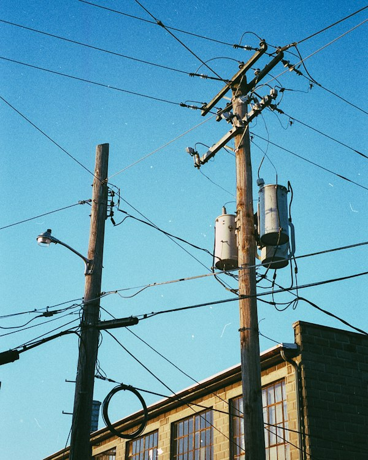

Public accountability feed tracking local service tickets, resident evidence submissions, and verified provider resolutions. Sample Data
Public Service Tickets
Low Water Pressure and Discoloration on Elm Street
Resolved
Provider:
City Water Board
Category:
Water Supply
Reported:
Residents across Elm Street blocks 400 to 520 experienced severe drops in household water pressure and rusty discoloration starting early Tuesday morning. Water heaters were unable to ignite due to insufficient flow.
Evidence Photo: Water pipeline leakage issue submitted by resident #FX-498 (Sample Data).
Official Provider Resolution: Emergency response squad inspected sub-main junction PRV-4B. The pressure regulation valve was blocked by mineral sediment. The unit was overhauled, the local pipe segment thoroughly flushed, and standard 45 PSI main line pressure was confirmed restored at 14:30 on Nov 13.
— City Water Board Customer Support Desk
Frequent Evening Voltage Fluctuations in Sector 4
In Progress
Provider:
BrightGrid Electric
Category:
Electricity
Reported:
Repeated voltage drops and power surges have been occurring between 6:30 PM and 9:00 PM throughout Sector 4. Multiple households reported flickering lighting and emergency shutdown of refrigeration appliances.

Evidence Photo: Sector 4 utility pole and transformer unit under review (Sample Data).
Status Update: Engineering unit has installed real-time phase load monitors at Substation B. Load balancing operations are underway with an estimated completion time within 24 hours.
Scheduled Thursday curbside collection for recyclable plastics and organic green bins was skipped on Oakridge Avenue. Waste bins remain on sidewalks causing pedestrian blockage and attracting stray animals.
Status Update: Route supervisor notified of vehicle mechanical failure on Route 9. A supplemental pickup truck has been scheduled for early tomorrow morning.